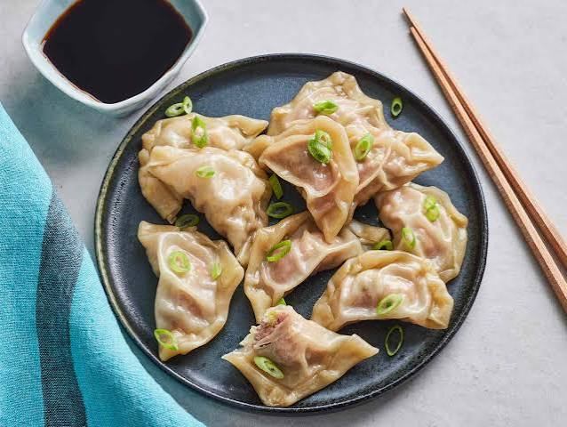

These flavorful pork dumplings are filled with ground pork, ginger, garlic, and cabbage, then steamed. Serve with hoisin or a sweet and spicy dipping sauce for a Chinese party appetizer or main dish.
Step
Combine pork, ginger, garlic, green onion, soy sauce, sesame oil, egg and cabbage in a large bowl. Stir until well mixed.Step
Place 1 heaping teaspoon of pork filling in the center of each wonton wrapper. Moisten edges with water and fold over to form a triangle. Press edges firmly to seal. Keep filled dumplings covered with a damp towel to prevent drying out until ready to cook.Step
Arrange dumplings in a covered bamboo or metal steamer lined with parchment, making sure they're not touching to prevent them from sticking together; steam over simmering water until pork is cooked through, about 15 minutes.Step
Serve hot and enjoy!